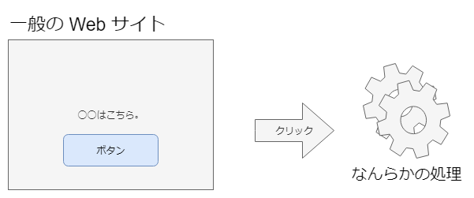
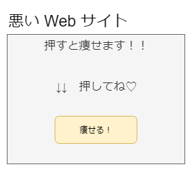
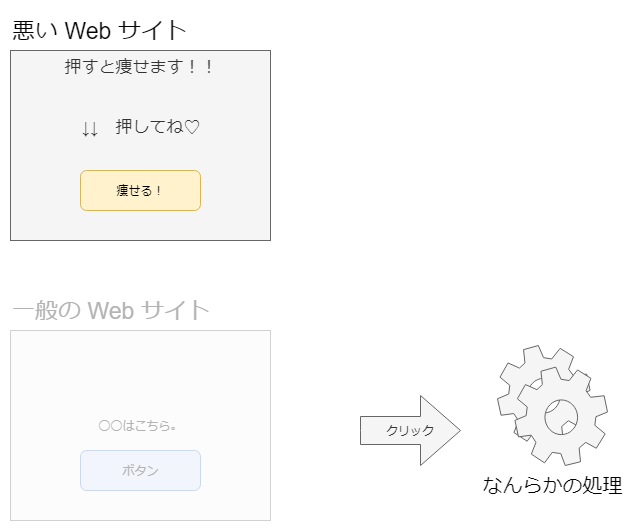
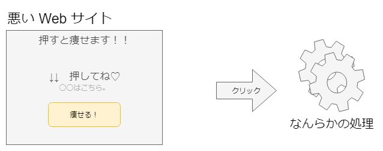
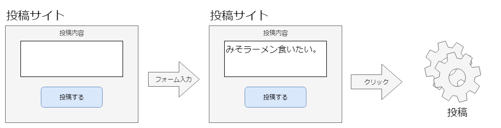
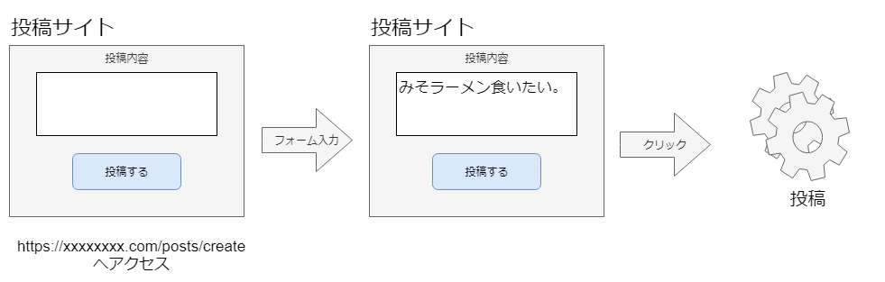
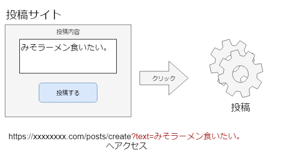
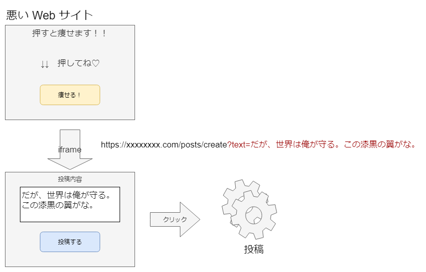
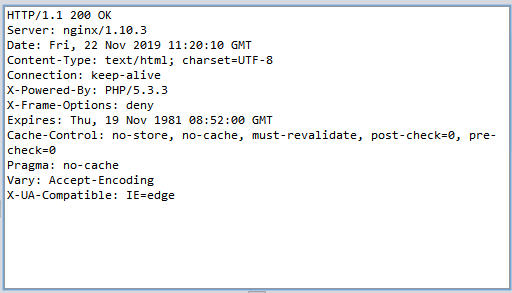

～「重要な処理」の際に混入する脆弱性～
CSRF（前半）
ボタンを押下すると何らかの処理が実行される

悪いサイトには、押したくなるボタンを設置

悪いサイトは、裏で一般のサイトをこっそり呼び出す

一般サイトをこっそり手前に重ねて表示する

ボタン押すと一般サイトの処理実行
ボタンを一回押しただけで、大事な処理になることって？
普通はフォーム入力をしてから、ボタン押下

入力ページへのアクセス

入力ページへのアクセスを工夫すると

つまり、１クリックで処理ができる

サンプル（./sample/45-010a.php）
<?php
$msg = '';
// クエリパラメータをメッセージとして取得する
if (!empty($_GET['intent'])) {
$msg = $_GET['intent'];
}
?>
// メッセージ初期表示
<textarea cols="40" name="msg"><?php ex($msg); ?></textarea>
通常のアクセス
ウェブインテント機能を利用したアクセス
サンプル(./sample/45-910.html)
<div style="position: absolute; top:35; left:5; z-index:0;">クリックしてスマートフォンを当てよう</div>
<!-- iframe で対象サイトを表示 -->
<iframe id="wana" style="position: absolute; top:0; left:0; z-index:5; opacity:0.5;" width=400 height=150 frameborder="0" src="http://example.jp/45/45-010.php?intent=wasbook%E5%B0%8F%E5%AD%A6%E6%A0%A1%E3%82%92%E8%A5%B2%E6%92%83%E3%81%97%E3%81%BE%E3%81%99"></iframe>
<div style="position: absolute; top:10; left:420;">

| 設定 | 挙動 |
|---|---|
| DENY | iframeの内側で表示されない |
| SAMEORIGIN | 同一オリジンの場合のみ表示 |
# Apache
Header always append X-Frame-Optioins SAMEORGIN
# nginx
add_header X-Frame-Options SAMEORIGIN;
未対策
<iframe>
<html><head></head><body style="background-color: #FFFFFF">
yamadaさん、投稿をどうぞ<br>
<form action="45-011.php" method="post">
<textarea cols="40" name="msg">wasbook小学校を襲撃します</textarea><br>
<input type="hidden" name="token" value="75c400fe8c0010d73dbe84c16596c2d4c2b6c52b1eaa2b7d">
<input type="submit" value="投稿">
</form>
</body></html>
</iframe>
対策済
<iframe>
</iframe>